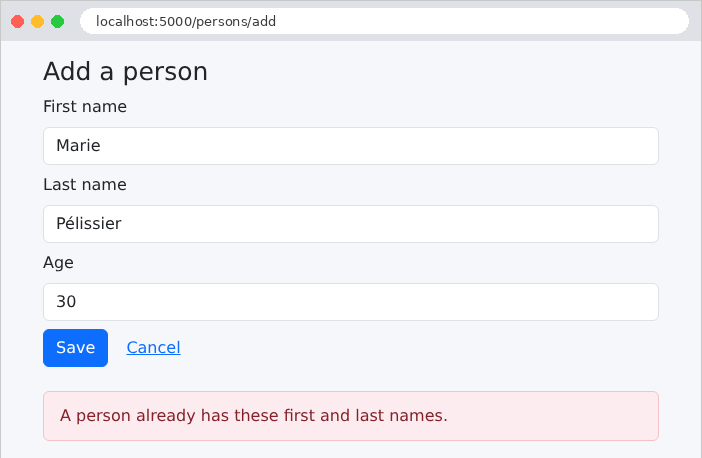
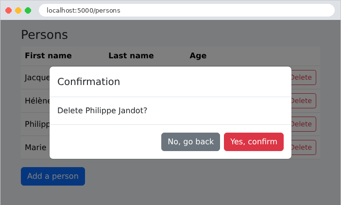
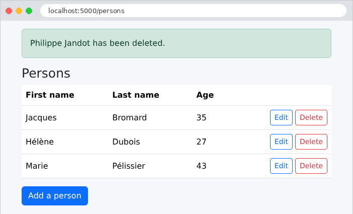

9. Arquitetura em camadas e acesso a dados
Os exemplos anteriores mantinham seus dados na memória. Uma aplicação real os armazena em um banco de dados e é organizada em camadas (veja o diagrama na introdução):
- a camada web (controllers, views): lê a requisição, chama a camada de negócio, seleciona a view;
- a camada de negócio: regras de negócio;
- a camada DAO (*Data Access Object*): consultas ao banco de dados.
Cada camada conhece apenas a camada inferior, e o mínimo possível de seus detalhes: a camada web desconhece o SQL, e a camada de negócio desconhece o HTML. Essa separação torna cada camada mais fácil de entender, testar e evoluir. O exemplo 28 aplica isso ao gerenciamento de uma lista de pessoas: é, em escala menor, o gerenciamento de médicos e clientes do estudo de caso.
Em [Python], o acesso ao banco de dados é organizado em várias camadas:
- O padrão DB-API (PEP 249) define a interface comum dos drivers de banco de dados: abrir uma conexão, executar um comando SQL e ler linhas. Para o [MySQL] (e o [MariaDB]), usamos o [PyMySQL], um driver escrito inteiramente em [Python], que se instala sem compilador;
- [SQLAlchemy] é a biblioteca de acesso a dados mais utilizada em [Python]. Ela tem dois níveis. Seu núcleo (*Core*) gerencia as conexões (incluindo um pool de conexões, que mantém algumas conexões abertas e as empresta às consultas, já que abrir uma conexão é custoso) e constrói comandos SQL a partir de [Python] expressões, independentemente do SGBD. Seu ORM (*Object-Relational Mapper*) mapeia as classes [Python] (as entidades) para tabelas do banco de dados e transforma as linhas lidas em objetos.
Isso equivale ao [JDBC], [JPA] e [Hibernate] para [Java], ou ao [Entity Framework Core] para [C#]. A extensão [Flask-SQLAlchemy] simplifica um pouco a configuração do [SQLAlchemy] em uma aplicação [Flask]; usamos o [SQLAlchemy] diretamente, o que mostra o que está acontecendo e mantém as camadas de negócio e DAO independentes do [Flask].
O exemplo requer um servidor [MySQL] (ou [MariaDB]) em execução: o apêndice explica como instalar um usando o [Laragon].
9.1. Exemplo 28: um sistema de gerenciamento de pessoas em três camadas
| 28-layers/
├── app.py
├── business/
│ ├── data.py
│ ├── exception.py
│ └── persons_business.py
├── config.py
├── controllers/
│ └── persons.py
├── dao/
│ └── persons_dao.py
├── database/
│ └── dbpersons.sql
├── entities/
│ └── person.py
├── models/
│ └── person_form.py
├── static/
│ ├── css/
│ │ └── styles.css
│ └── js/
│ └── app.js
└── templates/
├── fragments/
│ ├── confirmation.html
│ └── field.html
├── layout.html
└── persons/
├── form.html
└── list.html
|
9.1.1. O banco de dados
O banco de dados [dbpersons] é criado pelo script SQL. Com o [Laragon], você pode executá-lo, por exemplo, na ferramenta [HeidiSQL] (menu Arquivo / Executar arquivo SQL), ou pela linha de comando, a partir da pasta do exemplo:
| mysql -u root < database/dbpersons.sql
|
O arquivo [database/dbpersons.sql]:
| -- banco de dados do exemplo 28: uma única tabela, [persons]
-- o script é escrito em UTF-8
SET NAMES utf8mb4;
DROP DATABASE IF EXISTS dbpersons;
CREATE DATABASE dbpersons CHARACTER SET utf8mb4 COLLATE utf8mb4_unicode_ci;
USE dbpersons;
CREATE TABLE persons (
id INT NOT NULL AUTO_INCREMENT,
-- a versão da linha, incrementada pelo SQLAlchemy a cada modificação
version INT NOT NULL DEFAULT 0,
first_name VARCHAR(30) NOT NULL,
last_name VARCHAR(30) NOT NULL,
age INT NOT NULL,
PRIMARY KEY (id),
-- duas pessoas não podem ter o mesmo nome e sobrenome
CONSTRAINT unq_persons_first_name_last_name UNIQUE (first_name, last_name)
) ENGINE = InnoDB;
INSERT INTO persons (first_name, last_name, age) VALUES
('Marie', 'Pélissier', 42),
('Jacques', 'Bromard', 35),
('Philippe', 'Jandot', 58);
|
- Linha 3: o script é escrito em [UTF-8]; isso é informado ao servidor para que os acentos dos dados ([Pélissier]) permaneçam intactos;
- linha 5: o conjunto de caracteres [utf8mb4] aceita todos os caracteres (acentos, emojis etc.). A collation [utf8mb4_unicode_ci] compara cadeias de caracteres sem distinguir maiúsculas de minúsculas nem acentos: para o [MySQL], [pelissier] e [Pélissier] são iguais;
- linha 11: um número de versão, incrementado a cada modificação da linha (veja “bloqueio otimista”, adiante);
- linha 17: uma restrição de unicidade nomeada: o banco de dados não permite duas pessoas com o mesmo nome e sobrenome. O nome será usado para identificar o erro.
9.1.2. A configuração
| # config.py: a configuração da aplicação (veja o exemplo 25)
# a chave secreta: ela assina a sessão (mensagens flash) e os tokens anti-CSRF
SECRET_KEY = "a-secret-key-for-example-28"
# as mensagens de erro do WTForms são traduzidas pelo próprio WTForms (veja o exemplo 19)
WTF_I18N_ENABLED = False
# a conexão com o banco de dados: uma URL SQLAlchemy.
# mysql+pymysql: o SGBD MySQL, por meio do driver PyMySQL
# root: : o usuário root, sem senha (os do Laragon);
# com uma senha: root:myPassword@...
# localhost:3306/dbpersons: o servidor, sua porta, o banco de dados
# charset=utf8mb4: as trocas com o banco de dados são feitas em UTF-8
DATABASE_URL = "mysql+pymysql://root:@localhost:3306/dbpersons?charset=utf8mb4"
# True: as instruções SQL enviadas ao banco de dados são exibidas no console
SQL_ECHO = False
|
- Linha 15: o [SQLAlchemy] refere-se a um banco identificado por uma URL. [mysql+pymysql]: o dialeto SQL ([MySQL]) e o driver ([PyMySQL]); depois o usuário e sua senha (aqui, [root]; sem senha, a configuração do [Laragon]), o servidor, sua porta e o banco de dados; por fim, os parâmetros: [charset=utf8mb4] habilita a comunicação entre o driver e o servidor em [UTF-8]. Se o seu servidor tiver senha, modifique essa linha ou defina a variável de ambiente [FLASK_DATABASE_URL] (exemplo 25);
- Linha 18: com [True], o [SQLAlchemy] exibe no console todos os comandos SQL enviados ao banco de dados. Isso é muito informativo, e o usaremos mais adiante.
| # app.py: a aplicação do exemplo 28; a montagem das três camadas
from pathlib import Path
from flask import Blueprint, Flask
from flask_wtf.csrf import CSRFProtect
from sqlalchemy import create_engine
from sqlalchemy.orm import sessionmaker
from controllers.persons import persons
from dao.persons_dao import PersonsDao
from business.persons_business import PersonsBusiness
BOOTSTRAP = Path(__file__).resolve().parent.parent / "common" / "bootstrap"
def create_app():
app = Flask(__name__)
app.jinja_env.trim_blocks = True
app.jinja_env.lstrip_blocks = True
app.config.from_pyfile("config.py")
app.config.from_prefixed_env()
# o acesso ao banco de dados: o "engine" do SQLAlchemy gerencia um POOL de conexões
# (conexões abertas uma vez, depois reutilizadas de uma requisição para outra).
# pool_pre_ping: uma conexão é testada antes de ser reutilizada
engine = create_engine(app.config["DATABASE_URL"], echo=app.config["SQL_ECHO"],
pool_pre_ping=True)
# a factory de sessões; expire_on_commit=False: os objetos lidos continuam
# utilizáveis após o fim da transação (pela view, em particular)
sessions = sessionmaker(engine, expire_on_commit=False)
# a montagem das camadas: DAO -> negócio; a camada web conhece apenas a camada de negócio
app.extensions["business"] = PersonsBusiness(sessions, PersonsDao())
app.register_blueprint(Blueprint("bootstrap", __name__, static_folder=BOOTSTRAP,
static_url_path="/bootstrap"))
app.register_blueprint(persons)
CSRFProtect(app)
return app
if __name__ == "__main__":
create_app().run(port=5000, debug=True)
|
- Linhas 26–27: o *engine* do [SQLAlchemy] é o objeto que gerencia as conexões com um banco de dados e o pool de conexões. Ele é criado uma única vez, na inicialização; a primeira conexão só é aberta na primeira requisição. [pool_pre_ping=True] verifica uma conexão do pool antes de reutilizá-la: um servidor [MySQL] fecha as conexões inativas por muito tempo, e a aplicação receberia um erro caso contrário;
- Linha 30: uma sessão do tipo ORM é o objeto usado para ler e gravar entidades; ela toma emprestada uma conexão do pool e acompanha as entidades lidas para detectar alterações nelas. [sessionmaker] cria uma fábrica de sessões, cada chamada à qual produzirá uma sessão. Por padrão, ao fim de uma transação, a sessão “expira” as entidades (esquece seus valores, para lê-los novamente na próxima vez em que forem usados). [expire_on_commit=False] impede isso: as entidades retornadas pela camada de negócio continuam utilizáveis após a transação, pela view que as exibe;
- linha 33: montagem das camadas: a camada de negócio recebe a fábrica de sessões e a camada DAO. A camada web conhecerá apenas a camada de negócio;
- linha 38: proteção anti-CSRF para toda a aplicação (exemplo 21).
9.1.3. A entidade Person
| # entities/person.py: uma linha da tabela [persons]
from sqlalchemy import String
from sqlalchemy.orm import DeclarativeBase, Mapped, mapped_column
# a classe pai de todas as entidades: o SQLAlchemy registra nela o
# mapeamento classe <-> tabela de cada uma de suas classes filhas
class Base(DeclarativeBase):
pass
class Person(Base):
# o nome da tabela
__tablename__ = "persons"
# a chave primária, gerada pelo banco de dados (AUTO_INCREMENT); o SQLAlchemy lê
# seu valor de volta após cada INSERT. Mapped[int]: o tipo Python da coluna
id: Mapped[int] = mapped_column(primary_key=True)
# o bloqueio otimista: veja __mapper_args__ abaixo
version: Mapped[int] = mapped_column()
first_name: Mapped[str] = mapped_column(String(30))
last_name: Mapped[str] = mapped_column(String(30))
age: Mapped[int]
# version_id_col: o SQLAlchemy incrementa a versão a cada UPDATE e adiciona
# a condição "AND version = <valor lido>"
__mapper_args__ = {"version_id_col": version}
def __init__(self, first_name: str, last_name: str, age: int):
self.first_name = first_name
self.last_name = last_name
self.age = age
|
- linhas 8–9: todas as entidades de uma aplicação herdam da mesma classe base, derivada de [DeclarativeBase]. O [SQLAlchemy] armazena nessa classe a descrição de cada entidade (sua tabela, suas colunas): é o modelo declarativo;
- linha 14: a tabela associada à classe;
- linha 18: uma coluna é declarada por um atributo anotado com [Mapped[type]]: o tipo da coluna, em [Python]. [mapped_column] especifica suas características: neste caso, a chave primária. Por padrão, uma chave primária inteira é gerada pelo banco de dados ([AUTO_INCREMENT]): o [SQLAlchemy] relê seu valor após cada [INSERT];
- Linhas 21–23: [String(30)] especifica o tamanho da coluna (útil se o [SQLAlchemy] fosse criar a própria tabela). Uma coluna sem características especiais pode usar simplesmente a anotação ([age]). O tipo [Mapped[str]] torna a coluna obrigatória ([NOT NULL]); [Mapped[str | None]] a tornaria opcional;
- linha 27: [version_id_col] designa a coluna de versão: o [SQLAlchemy] a incrementa a cada [UPDATE] e adiciona a ele a condição [AND version = <value read>]. Se outra consulta tiver modificado a linha nesse meio-tempo, sua versão terá mudado; o [UPDATE] não modifica nenhuma linha, e o [SQLAlchemy] lança uma exceção [StaleDataError]. Trata-se de um bloqueio otimista: nada é bloqueado, mas as modificações concorrentes são detectadas;
- Linhas 29–32: um construtor para criar uma pessoa em uma única linha.
9.1.4. A camada DAO
| # dao/persons_dao.py: a camada DAO, consultas, nenhuma regra de negócio.
# Cada método recebe a SESSÃO do SQLAlchemy, aberta pela camada
# de negócio: todas as consultas de uma mesma operação compartilham assim a mesma
# conexão e a mesma transação
from sqlalchemy import delete, select
from sqlalchemy.orm import Session
from entities.person import Person
class PersonsDao:
# SELECT ... FROM persons ORDER BY last_name, first_name
def list(self, session: Session) -> list[Person]:
return list(session.scalars(select(Person).order_by(Person.last_name, Person.first_name)))
# SELECT ... WHERE id = ?; None se a pessoa não existir
def read(self, session: Session, id: int) -> Person | None:
return session.get(Person, id)
# uma pessoa com os mesmos nome e sobrenome, diferente de [except_id]:
# SELECT ... WHERE first_name = ? AND last_name = ? AND id <> ? LIMIT 1
def namesake(self, session: Session, first_name: str, last_name: str, except_id: int = 0) -> Person | None:
query = select(Person).where(Person.first_name == first_name, Person.last_name == last_name,
Person.id != except_id).limit(1)
return session.scalars(query).first()
# INSERT (nova pessoa): a pessoa é adicionada à sessão, e
# flush envia a instrução SQL IMEDIATAMENTE (e não no COMMIT)
def add(self, session: Session, person: Person) -> Person:
session.add(person)
session.flush()
return person
# DELETE FROM persons WHERE id = ?
def delete(self, session: Session, id: int):
session.execute(delete(Person).where(Person.id == id))
|
A camada DAO contém apenas consultas, sem regras de negócio. Cada método recebe a sessão aberta pela camada de negócio: todas as consultas de uma mesma operação de negócio compartilham assim a mesma conexão e a mesma transação.
- Linha 15: [select(Person)] constrói uma consulta ([SELECT]) sobre a tabela "persons"; [order_by] a ordena. As colunas são escritas como atributos da classe ([Person.last_name]): o editor pode verificar seus nomes, e nenhum SQL é escrito à mão. [session.scalars(...)] executa a consulta e retorna as entidades construídas a partir das linhas lidas;
- linha 19: leitura pela chave primária, ou [None];
- linhas 23–26: [where] adiciona condições, escritas com os operadores do [Python] ([==], [!=]): o [SQLAlchemy] as traduz para SQL, com parâmetros (os valores nunca são copiados para o texto do comando SQL, o que torna a injeção de SQL impossível). [first()] retorna a primeira entidade, ou [None];
- linhas 30–33: [session.add] atribui uma nova entidade à sessão; [flush] envia imediatamente o [INSERT] ao banco de dados (sem o [flush], ele aguardaria o [COMMIT]). O banco de dados então gera o ID, que o [SQLAlchemy] armazena na entidade;
- linha 37: um [DELETE], construído da mesma forma.
9.1.5. A camada de negócio
| # business/data.py: os dados de uma pessoa, como a camada web os repassa
from dataclasses import dataclass
@dataclass(frozen=True)
class PersonData:
first_name: str
last_name: str
age: int
|
Os dados de uma pessoa, como transmitidos pela camada web à camada de negócio: um objeto simples, sem relação com o [Flask], [WTForms] ou [SQLAlchemy].
| # business/exception.py: uma regra de negócio recusa a operação; a mensagem
# é destinada ao usuário
class BusinessException(Exception):
pass
|
Uma classe de exceção específica da camada de negócio: uma regra de negócio rejeita a operação, e a mensagem da exceção é destinada ao usuário.
| # business/persons_business.py: a camada de NEGÓCIO, as regras de negócio, e somente elas.
# Cada método abre sua TRANSAÇÃO: confirmada (COMMIT) no final do bloco
# with, cancelada (ROLLBACK) se uma exceção sair dele
from sqlalchemy.exc import IntegrityError
from sqlalchemy.orm import sessionmaker
from sqlalchemy.orm.exc import StaleDataError
from dao.persons_dao import PersonsDao
from entities.person import Person
from business.data import PersonData
from business.exception import BusinessException
NAMESAKE = "A person already has these first and last names."
MODIFIED = "This record has been modified meanwhile: reload it."
UNKNOWN = "This person does not exist (anymore)."
class PersonsBusiness:
# sessions: a "factory" de sessões do SQLAlchemy (veja app.py)
def __init__(self, sessions: sessionmaker, dao: PersonsDao):
self._sessions = sessions
self._dao = dao
def list(self) -> list[Person]:
# sessions.begin(): uma sessão E sua transação; o bloco with as fecha
with self._sessions.begin() as session:
return self._dao.list(session)
def read(self, id: int) -> Person:
with self._sessions.begin() as session:
return self._read(session, id)
def add(self, data: PersonData) -> Person:
try:
with self._sessions.begin() as session:
# regra 1: não pode haver duas pessoas com o mesmo nome e sobrenome
if self._dao.namesake(session, data.first_name, data.last_name):
raise BusinessException(NAMESAKE)
return self._dao.add(session, Person(data.first_name, data.last_name, data.age))
except IntegrityError as e:
raise self._translate(e)
def edit(self, id: int, version: int | None, data: PersonData) -> Person:
try:
with self._sessions.begin() as session:
person = self._read(session, id)
# regra 2: não modificamos um registro modificado nesse meio-tempo por outra pessoa
if person.version != version:
raise BusinessException(MODIFIED)
if self._dao.namesake(session, data.first_name, data.last_name, id):
raise BusinessException(NAMESAKE)
# a entidade lida é "rastreada" pela sessão: basta
# modificá-la; flush envia o UPDATE imediatamente
person.first_name = data.first_name
person.last_name = data.last_name
person.age = data.age
session.flush()
return person
except StaleDataError:
# o UPDATE "WHERE id = ... AND version = ..." não modificou nenhuma linha
raise BusinessException(MODIFIED)
except IntegrityError as e:
raise self._translate(e)
def delete(self, id: int) -> Person:
with self._sessions.begin() as session:
person = self._read(session, id)
self._dao.delete(session, id)
return person
def _read(self, session, id: int) -> Person:
person = self._dao.read(session, id)
if person is None:
raise BusinessException(UNKNOWN)
return person
# duas adições simultâneas: a restrição de unicidade do banco de dados rejeitou a
# segunda; e.orig: o erro original, o do driver PyMySQL
@staticmethod
def _translate(e: IntegrityError) -> Exception:
if "unq_persons_first_name_last_name" in str(e.orig):
return BusinessException(NAMESAKE)
return e
|
- Linha 27: cada método abre sua própria sessão e transação: [sessions.begin()] retorna uma sessão com uma transação iniciada. Ao final do bloco [with], a transação é confirmada ([COMMIT]) e a sessão é fechada; se ocorrer uma exceção dentro do bloco, a transação é revertida ([ROLLBACK]): nenhuma das alterações feitas dentro do bloco é mantida. A camada de negócio determina assim o escopo das transações: uma operação de negócio equivale a uma transação;
- linhas 34–42: regra nº 1: duas pessoas não podem ter o mesmo nome e sobrenome. A camada de negócio verifica essa regra antes de gravar no banco de dados e lança uma [BusinessException] se ela não for atendida. Mas essa verificação não é suficiente: duas requisições simultâneas poderiam verificar ambas que não há homônimos, e depois ambas prosseguir com a inserção dos dados. A restrição de unicidade do banco de dados rejeita então o segundo [INSERT], e o [SQLAlchemy] dispara uma [IntegrityError], que o método [_translate] transforma na mesma [BusinessException]. O banco de dados é a última linha de defesa;
- linhas 44–64: regra nº 2: não modificar um registro que foi modificado nesse meio-tempo por outra pessoa. O formulário de atualização carrega a versão do registro que foi lido (em um campo oculto); se ela for diferente da versão atual, o registro mudou desde que foi exibido. Aqui também, o banco de dados (por meio do bloqueio otimista) detecta os casos em que ocorre uma modificação concorrente entre a leitura e o [UPDATE]: é a exceção [StaleDataError]. Observe que a modificação é feita simplesmente alterando os atributos da entidade lida: a sessão acompanha isso, e o [flush] envia um [UPDATE] contendo apenas as colunas modificadas;
- linhas 66–70: a exclusão de uma pessoa resulta na mensagem de confirmação;
- linhas 72–76: uma pessoa inexistente é um erro de negócio;
- linhas 80–84: um método estático não recebe nem um objeto nem uma classe; é simplesmente uma função definida dentro da classe. [e.orig] é a exceção original, a do driver [PyMySQL], cuja mensagem contém o nome da restrição violada. Outro erro de integridade é repassado como está: não é um erro de negócio, mas um erro de programação.
9.1.6. A camada web
| # models/person_form.py: os campos do formulário e suas restrições (veja o exemplo 19)
from flask_wtf import FlaskForm
from wtforms import HiddenField, IntegerField, StringField
from wtforms.validators import DataRequired, InputRequired, Length, NumberRange, Optional
def clean(value):
return value.strip() if isinstance(value, str) else value
# uma versão: um inteiro, ou None se o campo estiver vazio (formulário de adição)
def integer_or_none(value):
return int(value) if value not in (None, "") else None
class PersonForm(FlaskForm):
class Meta:
locales = ["en"]
first_name = StringField("First name", filters=[clean], validators=[
DataRequired("The first name is required."), Length(max=30, message="30 characters at most.")])
last_name = StringField("Last name", filters=[clean], validators=[
DataRequired("The last name is required."), Length(max=30, message="30 characters at most.")])
age = IntegerField("Age", validators=[
InputRequired("The age is required."),
NumberRange(min=0, max=150, message="The age must be between 0 and 150.")])
# a versão do registro, carregada por um campo oculto (somente na edição)
version = HiddenField(filters=[integer_or_none])
|
O formulário [WTForms] (exemplo 19). O campo oculto [version] tem um filtro que o converte em inteiro, ou em [None] se estiver vazio (formulário de adição).
| # controllers/persons.py: a camada WEB; ela conhece apenas a camada de negócio
from flask import Blueprint, current_app, flash, redirect, render_template, url_for
from business.data import PersonData
from business.exception import BusinessException
from business.persons_business import PersonsBusiness
from models.person_form import PersonForm
persons = Blueprint("persons", __name__)
def business() -> PersonsBusiness:
return current_app.extensions["business"]
@persons.get("/")
def home():
return redirect(url_for("persons.list_persons"))
@persons.get("/persons")
def list_persons():
return render_template("persons/list.html", persons=business().list())
@persons.get("/persons/add")
def add_form():
return form_page("Add a person", url_for("persons.add"), PersonForm())
@persons.post("/persons/add")
def add():
form = PersonForm()
if not form.validate():
return form_page("Add a person", url_for("persons.add"), form)
try:
p = business().add(PersonData(form.first_name.data, form.last_name.data, form.age.data))
except BusinessException as e:
# uma regra de negócio recusa: exibimos o formulário de novo, a mensagem no final da página
return form_page("Add a person", url_for("persons.add"), form, str(e))
flash(f"{p.first_name} {p.last_name} has been added.", "success")
return redirect(url_for("persons.list_persons"))
@persons.get("/persons/<int:id>/edit")
def edit_form(id):
try:
p = business().read(id)
except BusinessException as e:
flash(str(e), "error")
return redirect(url_for("persons.list_persons"))
# obj=p: os campos do formulário são preenchidos com os atributos de p de mesmo nome
return form_page("Edit a person", url_for("persons.edit", id=id),
PersonForm(obj=p))
@persons.post("/persons/<int:id>/edit")
def edit(id):
action = url_for("persons.edit", id=id)
form = PersonForm()
if not form.validate():
return form_page("Edit a person", action, form)
try:
data = PersonData(form.first_name.data, form.last_name.data, form.age.data)
p = business().edit(id, form.version.data, data)
except BusinessException as e:
return form_page("Edit a person", action, form, str(e))
flash(f"{p.first_name} {p.last_name} has been edited.", "success")
return redirect(url_for("persons.list_persons"))
@persons.post("/persons/<int:id>/delete")
def delete(id):
try:
p = business().delete(id)
flash(f"{p.first_name} {p.last_name} has been deleted.", "success")
except BusinessException as e:
# nenhum formulário a exibir de novo: o erro também viaja como mensagem flash
flash(str(e), "error")
return redirect(url_for("persons.list_persons"))
# a página do formulário: título, endereço de envio, formulário, erro global
def form_page(title: str, action: str, form: PersonForm, error: str | None = None):
return render_template("persons/form.html", title=title, action=action,
form=form, error=error)
|
- linhas 12–13: a camada de negócio, a única camada conhecida pelo controller;
- linhas 32–42: a operação de adição, em três etapas: validação do formulário (erros de entrada), chamada à camada de negócio (regras de negócio) e, por fim, o esquema PRG. Uma [BusinessException] reexibe o formulário, junto com sua mensagem de rodapé. [flash] recebe uma categoria como segundo parâmetro (["success"]), que o template usa para escolher a apresentação da mensagem;
- linhas 46–54: o formulário de edição, pré-preenchido: o parâmetro [obj] preenche os campos do formulário com os atributos de mesmo nome do objeto, incluindo a versão. Uma pessoa inexistente redireciona para a lista, com uma mensagem de erro flash;
- linhas 58–69: a edição, seguindo o mesmo padrão da operação de adição;
- linhas 73–80: exclusão. Não há formulário para reexibir: qualquer erro também é exibido em uma mensagem pop-up, da categoria ["error"].
A camada web não contém nem SQL nem regras de negócio: ela traduz a requisição em uma chamada à camada de negócio e o resultado em uma página.
| <!doctype html>
<html lang="en">
<head>
<meta charset="utf-8">
<title>Persons</title>
<link rel="stylesheet" href="{{ url_for('bootstrap.static', filename='css/bootstrap.min.css') }}">
<link rel="stylesheet" href="{{ url_for('static', filename='css/styles.css') }}">
</head>
<body>
<div class="container py-3" style="max-width: 40rem">
{# as mensagens de sucesso (mensagens flash da categoria "success"): no topo #}
{% for message in get_flashed_messages(category_filter=["success"]) %}
<div class="alert alert-success" role="status">{{ message }}</div>
{% endfor %}
<main>
{% block content %}{% endblock %}
</main>
{# o erro: da requisição atual ou de antes do redirecionamento (mensagem flash) #}
{% for message in get_flashed_messages(category_filter=["error"]) + ([error] if error else []) %}
<div class="error-area" role="alert">{{ message }}</div>
{% endfor %}
</div>
{% include "fragments/confirmation.html" %}
<script src="{{ url_for('static', filename='js/app.js') }}"></script>
</body>
</html>
|
- linhas 12–14: [category_filter] renderiza apenas as mensagens flash das categorias especificadas: mensagens de sucesso, no topo da página;
- linhas 19–21: erros, no pé da página: os ocorridos antes de um redirecionamento (mensagens flash), seguidos do erro da requisição atual (variável [error]). O operador [+] concatena duas listas.
| {% extends "layout.html" %}
{% block content %}
<h1 class="h3">Persons</h1>
<table class="table align-middle">
<thead><tr><th>First name</th><th>Last name</th><th>Age</th><th></th></tr></thead>
<tbody>
{% for p in persons %}
<tr>
<td>{{ p.first_name }}</td>
<td>{{ p.last_name }}</td>
<td>{{ p.age }}</td>
<td class="text-end">
<a class="btn btn-sm btn-outline-primary" href="{{ url_for('persons.edit_form', id=p.id) }}">Edit</a>
<form method="post" class="d-inline" action="{{ url_for('persons.delete', id=p.id) }}"
data-confirmation="Delete {{ p.first_name }} {{ p.last_name }}?">
<input type="hidden" name="csrf_token" value="{{ csrf_token() }}">
<button class="btn btn-sm btn-outline-danger" type="submit">Delete</button>
</form>
</td>
</tr>
{% endfor %}
</tbody>
</table>
<a class="btn btn-primary" href="{{ url_for('persons.add_form') }}">Add a person</a>
{% endblock %}
|
A lista inclui os links e botões do exemplo 21, junto com sua janela de confirmação (os arquivos [fragments/confirmation.html] e [static/js/app.js] são os do exemplo 21).
| {% extends "layout.html" %}
{% from "fragments/field.html" import field_row %}
{% block content %}
<h1 class="h3">{{ title }}</h1>
<form method="post" action="{{ action }}" novalidate>
{{ form.csrf_token }}
{# a versão do registro lido: ela voltará com o formulário #}
{{ form.version }}
{{ field_row(form.first_name) }}
{{ field_row(form.last_name) }}
{{ field_row(form.age) }}
<button class="btn btn-primary" type="submit">Save</button>
<a class="btn btn-link" href="{{ url_for('persons.list_persons') }}">Cancel</a>
</form>
{% endblock %}
|
- linha 9: o campo oculto que carrega a versão do registro lido;
- Linhas 10–12: a macro do exemplo 19.
9.1.7. Execução
A lista de pessoas:

Um formulário de adição preenchido incorretamente: os erros de entrada de dados são detectados pela camada web.

Um homônimo: a entrada está correta, mas a camada de negócio rejeita a adição. Como a comparação é feita pelo banco de dados, ela ignora maiúsculas e acentos: [marie pelissier] também seria homônimo de [Marie Pélissier].

Uma adição bem-sucedida:

Para testar a regra nº 2, vamos abrir o mesmo registro em duas abas. Na primeira aba, vamos alterar a idade e salvar. Na segunda aba, que ainda exibe a versão antiga, vamos também modificar o registro:

A exclusão, com sua confirmação:


9.1.8. Os comandos SQL
Vamos reiniciar a aplicação com a variável de ambiente [FLASK_SQL_ECHO=true] (no [Windows]: [$env:FLASK_SQL_ECHO="true"]) e acompanhar no console os comandos SQL de uma modificação. A exibição do formulário de alteração da pessoa nº 1:
| INFO sqlalchemy.engine.Engine BEGIN (implicit)
INFO sqlalchemy.engine.Engine SELECT persons.id, persons.version, persons.first_name, persons.last_name, persons.age
FROM persons
WHERE persons.id = %(pk_1)s
INFO sqlalchemy.engine.Engine [generated in 0.00017s] {'pk_1': 1}
INFO sqlalchemy.engine.Engine COMMIT
|
Uma transação, um [SELECT], por chave primária, cujo valor é passado como parâmetro ([%(pk_1)s]; veja a sintaxe de parâmetros do [PyMySQL]). Salvando o registro com uma nova idade:
| INFO sqlalchemy.engine.Engine BEGIN (implicit)
INFO sqlalchemy.engine.Engine SELECT persons.id, persons.version, persons.first_name, persons.last_name, persons.age
FROM persons
WHERE persons.id = %(pk_1)s
INFO sqlalchemy.engine.Engine [cached since 0.05972s ago] {'pk_1': 1}
INFO sqlalchemy.engine.Engine SELECT persons.id, persons.version, persons.first_name, persons.last_name, persons.age
FROM persons
WHERE persons.first_name = %(first_name_1)s AND persons.last_name = %(last_name_1)s AND persons.id != %(id_1)s
LIMIT %(param_1)s
INFO sqlalchemy.engine.Engine [generated in 0.00016s] {'first_name_1': 'Marie', 'last_name_1': 'Pélissier', 'id_1': 1, 'param_1': 1}
INFO sqlalchemy.engine.Engine UPDATE persons SET version=%(version)s, age=%(age)s WHERE persons.id = %(persons_id)s AND persons.version = %(persons_version)s
INFO sqlalchemy.engine.Engine [generated in 0.00015s] {'version': 1, 'age': 43, 'persons_id': 1, 'persons_version': 0}
INFO sqlalchemy.engine.Engine COMMIT
|
Em uma única transação, vemos o seguinte: a leitura do registro, a busca de um homônimo e, em seguida, o [UPDATE]. Essa transação modifica apenas a coluna alterada ([age]), incrementa a versão (de 0 para 1) e define a condição do bloqueio otimista ([AND persons.version = 0]). A entrada [cached since] indica que o [SQLAlchemy] reutilizou a tradução em SQL de uma requisição construída anteriormente. Agora vamos enviar o mesmo formulário uma segunda vez, ainda com a versão 0:
| INFO sqlalchemy.engine.Engine BEGIN (implicit)
INFO sqlalchemy.engine.Engine SELECT persons.id, persons.version, persons.first_name, persons.last_name, persons.age
FROM persons
WHERE persons.id = %(pk_1)s
INFO sqlalchemy.engine.Engine [cached since 0.09593s ago] {'pk_1': 1}
INFO sqlalchemy.engine.Engine ROLLBACK
|
A versão lida (1) não é a mesma do formulário (0): a camada de negócio lançou uma [BusinessException], que reverteu a transação ([ROLLBACK]), e a página exibe “This record has been modified meanwhile: reload it.” Da mesma forma, o processo de adição de um homônimo para após a busca por homônimos, sem um [INSERT].